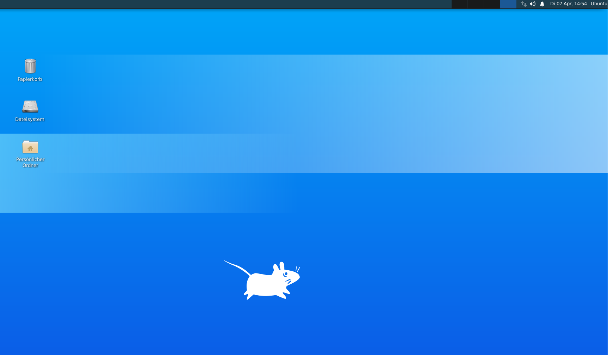

Was passiert schon an einem Freitag, der 13.
Die erste Vorlesung in BAIN (Bibliotheks- und Archivinformatik) bei Felix Lohmeier fand am 13. März 2020 in Zürich statt.
Freitag, der 13. Und tatsächlich hingen dunkle Wolken über der Schweiz, nicht wortwörtlich, denn der Tag war wettertechnisch sehr schön,
der Frühling war angekommen. Aber dennoch sollte dieser Freitag in die Schweizer Geschichte eingehen. Etwa um 15:30 Uhr verkündete die
Bundesrätin Simonetta Sommaruga, dass sämtliche Schulen und Universitäten bis zum 04. April geschlossen werden. Die Studierenden konnten
kaum ruhig sitzen bleiben, nervös wurde über die Auswirkungen, welche die Covid-19-Pandemie mit sich gebracht hat, diskutiert. Wie soll das
Studium weitergehen? Müssen nun sämtliche Vorlesungen über Video-Übertragung gehalten werden, oder fallen sie womöglich komplett aus? Nun,
nichts desto trotz wurde die Vorlesung freitags bis zum Schluss durchgezogen, die Bildung sollte unter dem Lockdown nicht leiden.
Deshalb ein kurzer Einblick dazu, was ich von der ersten BAIN-Vorlesung mitgenommen habe.
Gestartet wurde mit einer kurzen Zusammenfassung zum Leistungsnachweis. Jeder und jede Studierende soll innert zwei Wochen nach der Lerneinheit einen Blogartikel (ca. ein bis zwei A4-Seiten) erfassen, in welchem er oder sie die Inhalte der Vorlesung Revue passieren
lässt und diese mit persönlichen Gedanken und Kritiken abrundet. Dieses sogenannte Lerntagebuch soll Online gestellt werden
(z.B. auf GitHub) wo es öffentlich gemacht werden kann oder privat veröffentlicht wird.
Weiter ging es in der zweiten Stunde um technische Aufklärung bezüglich der verwendeten Online-Tools für die Vorlesungen.
Herr Lohmeier hat ein Online-Dokument (über die Software CodiMD) erstellt, das jedem Studenten und jeder Studentin erlaubt, Bearbeitungen vorzunehmen.
Diese Art der Kommunikation scheint während Zeiten des «Social Distancing» äusserst praktisch zu sein, insofern sie von den
Studierenden auch aktiv genutzt wird. Natürlich ist diese Präsentationsform ganz anders, als sie andere Dozenten für gewöhnlich nutzen.
Das Fehlen der klassischen PowerPoint-Folien ist definitiv eine Sache, an die man sich zuerst gewöhnen muss.
Nachdem diverse Funktionen und Tools getestet wurden, konnte mit der Vorlesung gestartet werden.
Einrichtung der Arbeitsumgebung
Das Ziel dieses Blocks war es, eine virtuelle Maschine auf einer Cloud-Plattform einzurichten (hier: Microsoft Azure). Das gewählte Betriebssystem für diese virtuelle Maschine soll Linux (Ubuntu 19.10) sein und XFCE für die graphische Oberfläche (anstatt GNOM). Die meisten Server nutzen Linux ohne eine grafische Oberfläche, da somit eine unnötige Sicherheitslücke entfällt. Microsoft Azure bietet die Möglichkeit, eine virtuelle Maschine auf ihrem Webserver (Cloud) zu installieren, der auf Stundenbasis abbezahlt wird. Somit muss nur bezahlt werden, was auch tatsächlich genutzt wird. In BAIN wird damit gerechnet, dass jeder und jede Studierende ungefähr 40 Stunden auf diesem Webserver aufwendet.
Das heisst, der «virtuelle Computer» kann, wenn er gebraucht wird, per Schalter aktiviert werden, darauf das kleine Bildschirm-Symbol klicken und per RDP verbinden. Nach drei Bestätigungen öffnet sich dann auch automatisch ein Fenster zur VM. (Das Starten der VM kann einige Zeit dauern...).
Die wichtigsten Programme, die wir brauchen werden, befinden sich im Menü am unteren Fensterrand und umfassen: ein Terminal, Firefox, Dateimanager und ein Texteditor.

Grundlagen der Unix Shell
Die Unix Shell wird zur Administration von Servern genutzt und kann bei Einstellungen der Software hilfreich sein. Für einen kleinen Refresh zur Nutzung der Shell, haben wir ein paar Übungen über Library Carpentry gelöst. Folgend eine Liste einiger Kommandos, die vorgekommen sind:
Fazit der ganzen Kommandosache
Die wc-Kommandos sind Beispiele für Redirects und Pipes (|)
Die Pipes werden genutzt, um nach einem Kommando direkt mit dem nächsten Kommando weiterzuarbeiten.
Redirects sind wie hier wc -l *.txt > lengths.txt Funktionen, welche die Ergebnisse eines Kommandos direkt in eine Datei umlenken können.
Die wichtigsten Kommandos sind auch
hier zu finden.
Versionskontrolle mit Git
Git ist eine Software, die das Bearbeiten von Dateien von einer oder mehreren Personen gleichzeitig ermöglicht (d.h. ähnlich wie Google Docs oder OneDrive). Mit GitHub kann ein Git-Repository online abgelegt und anderen Nutzern zur Verfügung gestellt werden (so ist GitHub auch für das Lerntagebuch geeignet). Die Nutzer*innen können dann dieses Repository kopieren und selber anwenden und wenn sie Änderungsvorschläge haben, können sie diese mit
Pull Requests anbieten. Die Ersteller des Repositories können dann entscheiden, ob sie die Änderung annehmen wollen oder nicht.